Publications
- All
- Deep Learning
- Dataset
- Weather Forecasting
- LULC
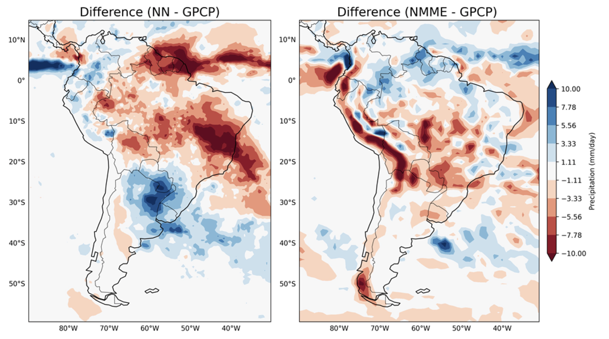
Precipitation Forecasting and Drought Monitoring in South America Using a Machine Learning Approach
by Anochi, Juliana and Schimizu, Marilia (2025)
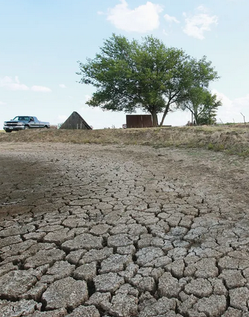
Forecasting drought using machine learning: a systematic literature review
by Anochi, Juliana et al (2025)
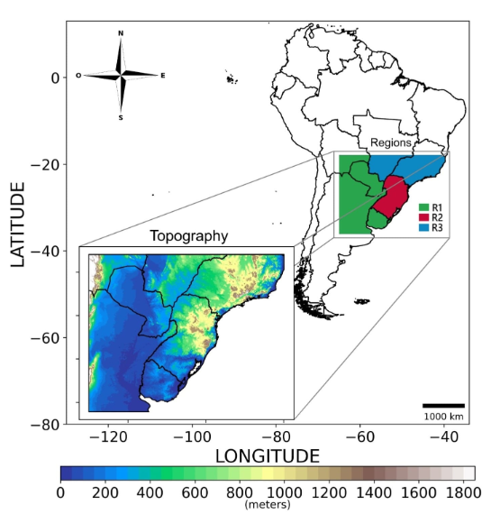
Machine Learning with Voting Committee for Frost Prediction
by Anochi, Juliana et al (2025)

CerraData-4MM: A multimodal benchmark dataset on Cerrado for land use and land cover classification
by Miranda, Mateus et al (2025)
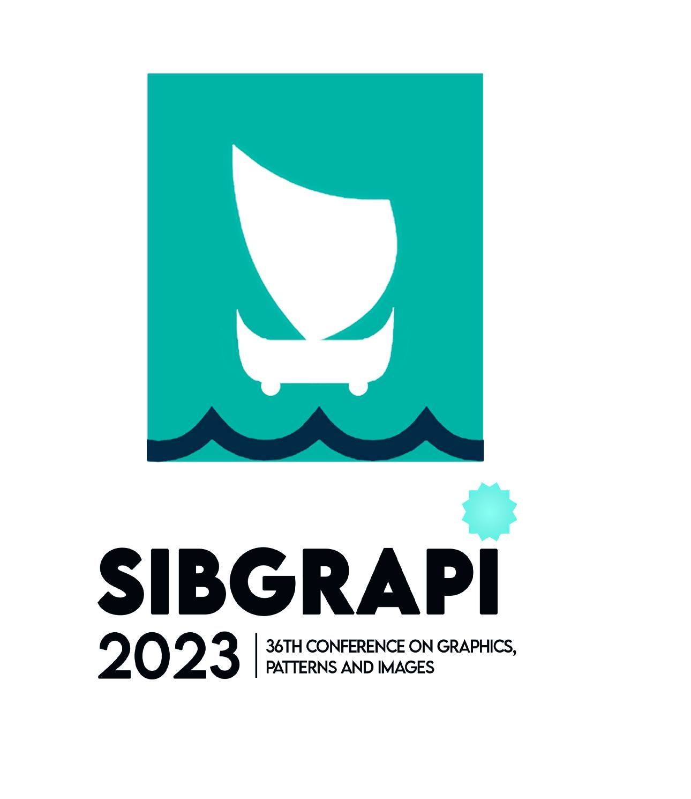
Special Section on SIBGRAPI 2023
Korting, T.S. et al (2025)
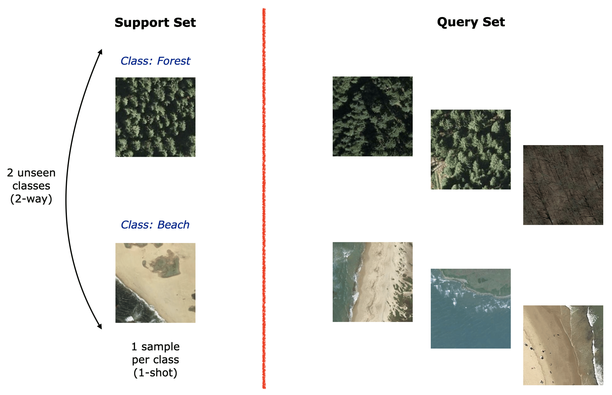
Empirical Evidence Regarding Few-Shot Learning for Scene Classification in Remote Sensing Images
by Santiago Júnior, Valdivino Alexandre (2024)
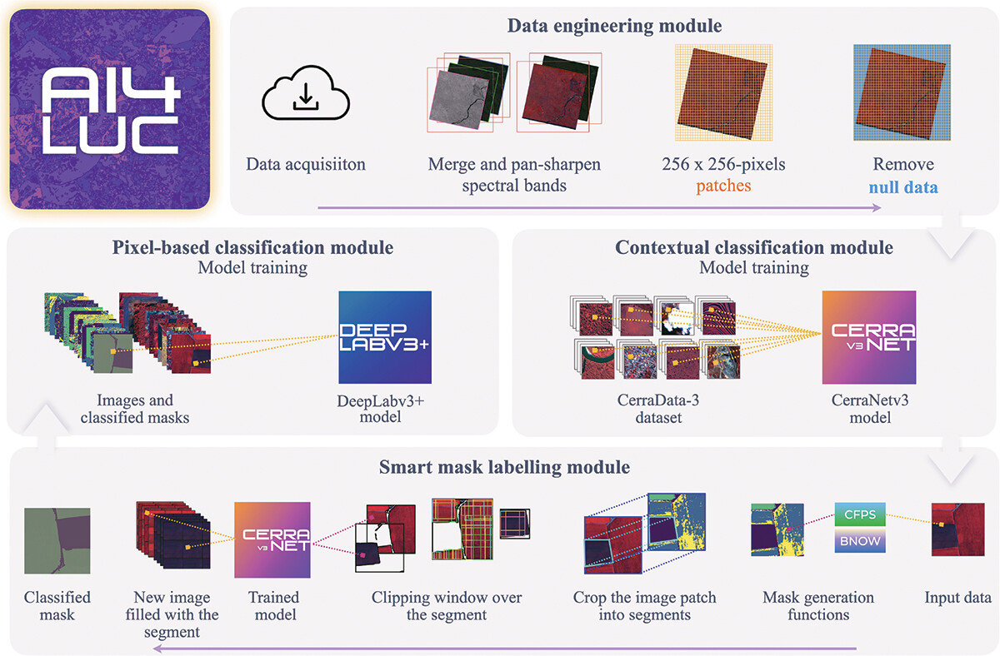
AI4LUC: Deep Learning and Automated Mask Labelling to Support Land Use and Land Cover Mapping in the Cerrado Biome
by Miranda, Mateus et al (2024)
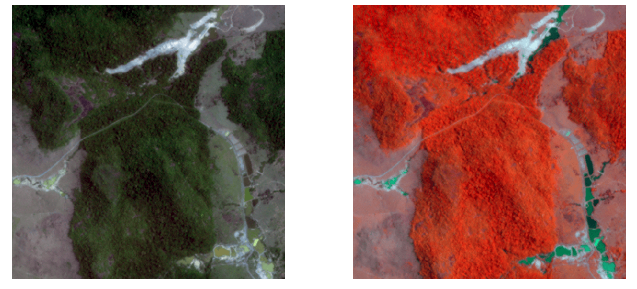
Mining Sites Recognition via Scene Classification Using 3D Convolutional Neural Networks
by Oliveira, André; et al (2024)
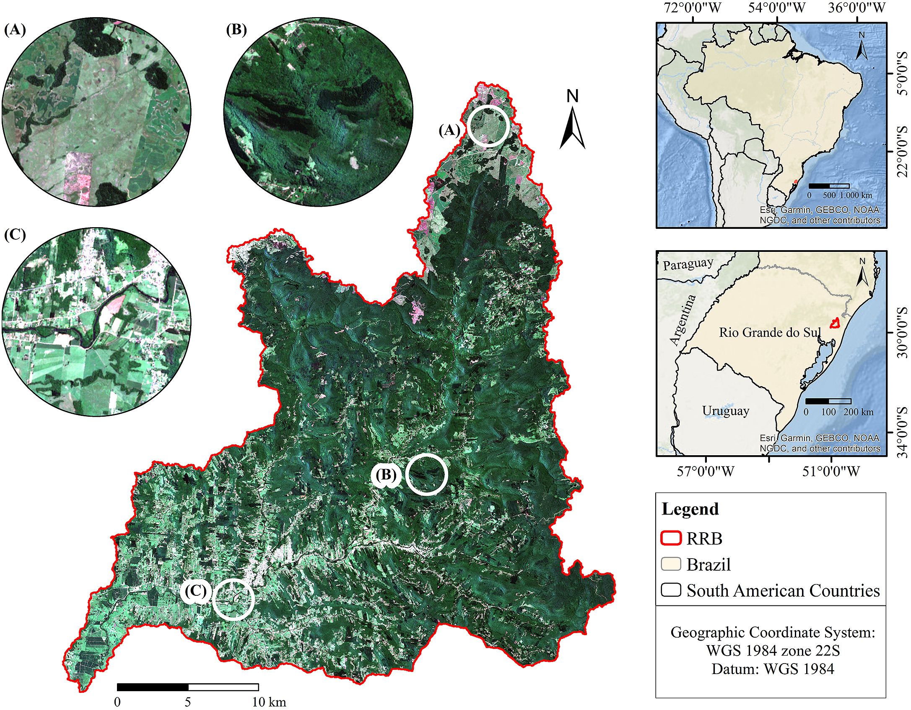
Land use and land cover changes without invalid transitions: A case study in a landslide-affected area
by Korting, T.S. et al (2024)
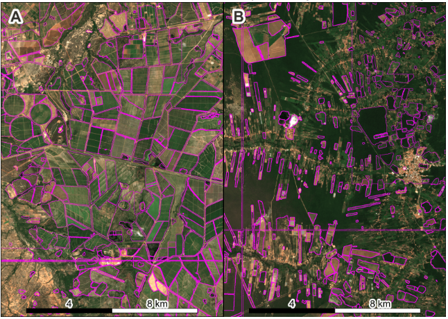
Comparing the Segment Anything Model with Region Growing Algorithms in the detection of irrigated croplands
by Korting, T.S. et al (2024)
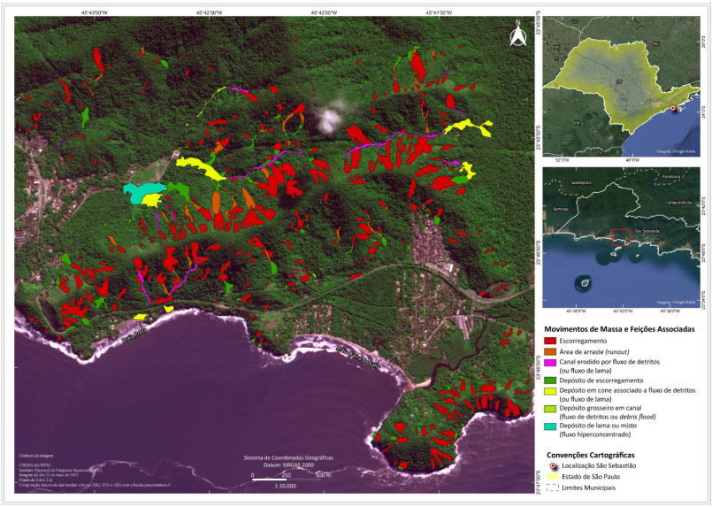
DESASTRE EM SÃO SEBASTIÃO-SP: MAPEAMENTO DOS PROCESSOS DE MOVIMENTOS DE MASSA DEFLAGRADOS EM FEVEREIRO DE 2023
by Korting, T.S. et al (2024)
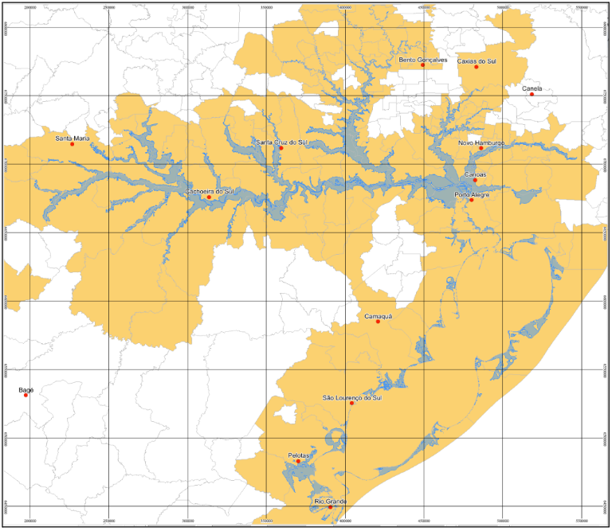
Metodologia da Produção do Mapa de Inundações e Movimentos de Massa do Desastre do RS em Maio de 2024
by Korting, T.S. et al (2024)
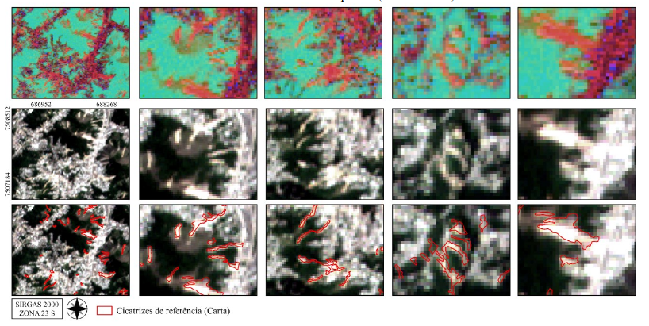
Processamento de Imagens dos Satélites Brasileiros CBERS-4 e CBERS-4A para Respostas Rápidas a Desastres
by Korting, T.S. et al (2024)
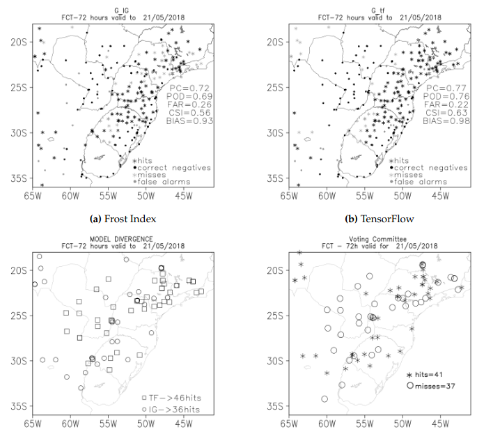
Machine Learning for Frost Prediction in a South America Region
by Anochi, Juliana et al (2024)
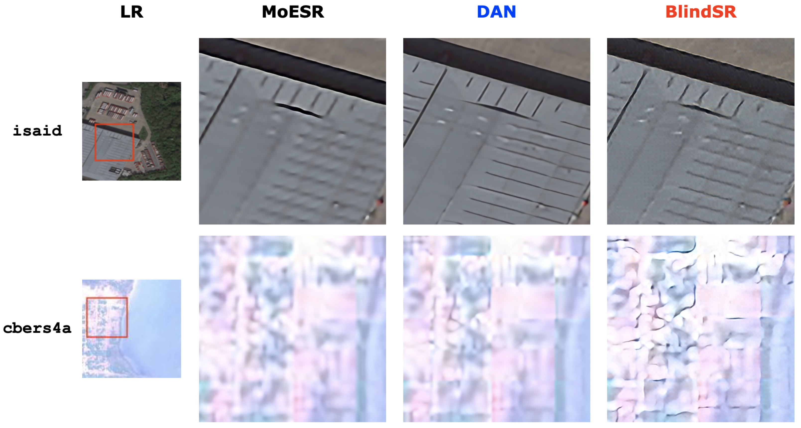
Evaluating Deep Learning Techniques for Blind Image Super-Resolution within a High-Scale Multi-Domain Perspective
by Santiago Júnior, Valdivino Alexandre (2023)